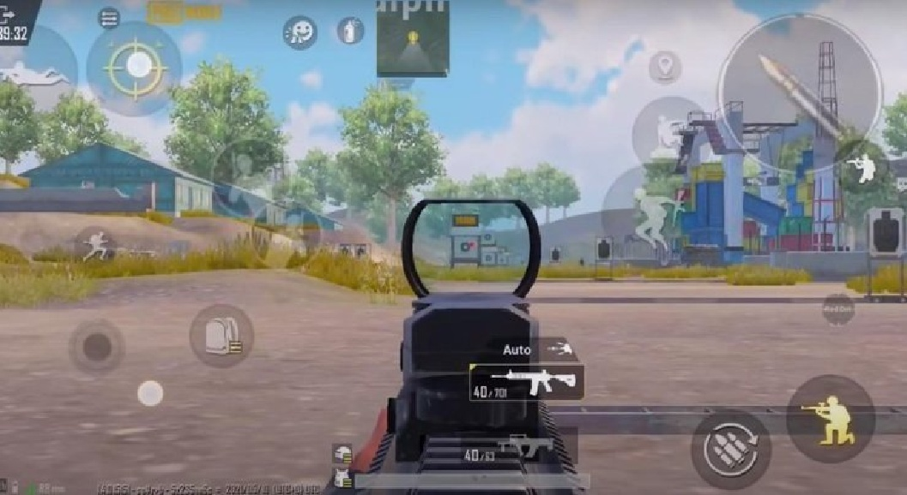
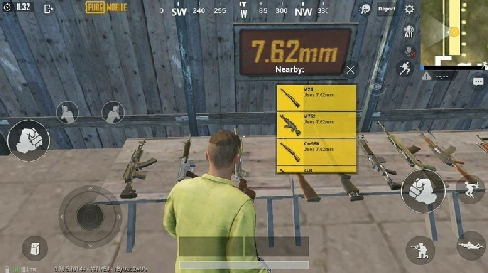
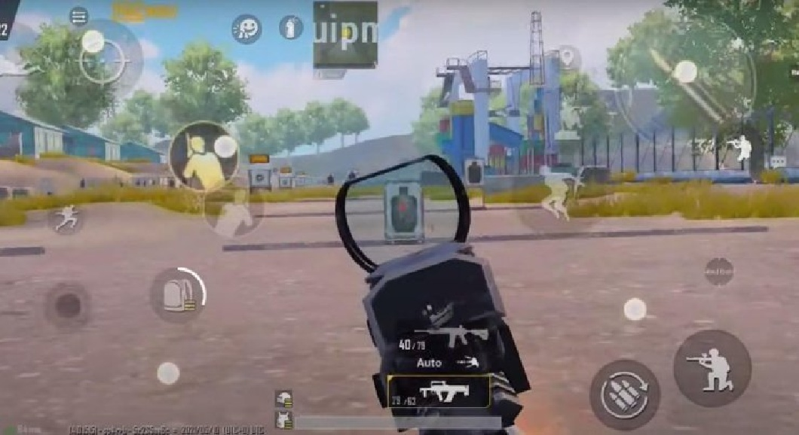

Vũ khí PUBG Mobile sẽ tạo ra độ giật khi đạn ra khỏi nòng súng. Độ giật của súng là chuyển động giật lùi của nòng súng khi bạn bắn và nhả đạn. Tốc độ đầu đạn càng cao thì độ giật của nó càng lớn. Bên cạnh đó, kích thước của viên đạn cũng ảnh hưởng đến độ giật của súng. Ví dụ, vũ khí đạn 7,62mm thường có độ giật cao hơn súng đạn 5,56mm.
Ngoài ra, trong PUBG Mobile có hai kiểu giật bao gồm độ giật dọc và độ giật ngang. Độ giật thẳng đứng sẽ làm cho nòng súng bị nghẹt. Trong khi đó, độ giật ngang khiến nòng súng rung chuyển trái phải. Do đó, độ giật của súng sẽ khiến bạn bắn kém chính xác hơn. Độ giật dọc thường cao hơn độ giật ngang.
Có thể giảm độ giật ngang bằng cách sử dụng các phụ kiện thích hợp, chẳng hạn như nòng, tay cầm và báng sau. Trong khi đó, chỉ có thể giảm độ giật dọc bằng độ nhạy hoàn hảo. Do đó, bạn cần cài đặt độ nhạy phù hợp để súng hoạt động ổn định hơn.
Bạn có thể sử dụng độ nhạy để giảm độ giật của súng. Với cài đặt độ nhạy thích hợp, bạn có thể chụp với độ giật thấp hơn. Bạn có thể tìm hiểu cài đặt độ nhạy từ người chơi PUBG Mobile chuyên nghiệp, YouTuber hoặc streamer. Có ba cài đặt độ nhạy bạn cần điều chỉnh.
Chọn một giá trị ngẫu nhiên trong các thống kê được đề xuất này và điều chỉnh nó sau khi luyện tập ở sân tập hoặc chế độ xếp hạng. Độ giật của súng cũng có thể bị ảnh hưởng bởi chất lượng của thiết bị. Do đó, bạn có thể phải điều chỉnh nó nếu các giá trị này không phù hợp với thiết bị của bạn.
Chọn một giá trị ngẫu nhiên trong các thống kê được đề xuất này và điều chỉnh nó sau khi luyện tập ở sân tập hoặc chế độ xếp hạng. Độ giật của súng cũng có thể bị ảnh hưởng bởi chất lượng của thiết bị. Do đó, bạn có thể phải điều chỉnh nó nếu các giá trị này không phù hợp với thiết bị của bạn.
Độ nhạy ADS sẽ ảnh hưởng đến độ nhạy của máy ảnh khi bạn nhắm và chụp. Nó sẽ giúp bạn kéo nòng súng xuống và giảm độ giật dọc của súng. Đây là cài đặt độ nhạy được khuyến nghị của một người chơi chuyên nghiệp.
Bên cạnh đó, bạn không thể bắn chính xác khi màn hình bị rung lắc nhiều. Bạn khó có thể hạ nòng súng, đặc biệt là khi bạn sử dụng vũ khí có độ giật cao, chẳng hạn như Mk14, AKM, Beryl M762, v.v.
Đây là cài đặt độ nhạy khuyến nghị mới nhất không có độ giật cho người chơi con quay hồi chuyển.